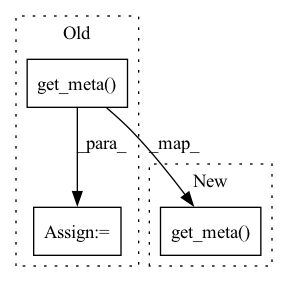

Pattern ID :41278
Before Change
meta = super().get_meta()
meta[0]["data"] = {}
for ds in self._datasets:
meta[0]["data"][repr(ds)] = ds.get_meta()
return meta
After Change
Concatenator calls `get_meta()` of all its datasets
meta = super().get_meta()
meta[0]["data"] = [ds.get_meta() for ds in self._datasets]
return meta
In pattern: SUPERPATTERN
Frequency: 3
Non-data size: 3
Instances Fragment ID: 116283532
Project Name: oxid15/cascade
Commit Name: a20ba8205c43988ef9261d867a6eb67ae19f23fd
Time: 2022-09-29
Author: villeman.5@yandex.ru
File Name: cascade/data/concatenator.py
M Class Name: Concatenator
N Class Name: Concatenator
M Method Name: get_meta(1)
N Method Name: get_meta(1)
M Parent Class: Dataset
N Parent Class: Dataset
M File Name: cascade/data/concatenator.py
N File Name: cascade/data/concatenator.py
M Start Line: 69
M End Line: 73
N Start Line: 70
N End Line: 70
Before Change
def get_meta(self) -> dict:
meta = {str(uuid1()): repr(self)}
meta_others = {str(uuid1()): ds.get_meta() for ds in self._datasets}
meta.update(meta_others)
return meta
After Change
def get_meta(self) -> dict:
meta = super().get_meta()
for ds in self._datasets:
meta += ds.get_meta()
return meta
Fragment ID: 116283529
Project Name: oxid15/cascade
Commit Name: a2e4c0926f5289fb156cfa17bdf17c55c1366aa8
Time: 2022-04-02
Author: villeman.5@yandex.ru
File Name: data/concatenator.py
M Class Name: Concatenator
N Class Name: Concatenator
M Method Name: get_meta(1)
N Method Name: get_meta(1)
M Parent Class: Dataset
N Parent Class: Dataset
M File Name: data/concatenator.py
N File Name: data/concatenator.py
M Start Line: 27
M End Line: 29
N Start Line: 26
N End Line: 29
Before Change
meta = super().get_meta()
meta[0]["data"] = []
for ds in self._datasets:
meta[0]["data"] += ds.get_meta()
return meta
After Change
meta = super().get_meta()
meta[0]["data"] = {}
for ds in self._datasets:
meta[0]["data"][repr(ds)] = ds.get_meta()
return meta
Fragment ID: 116283526
Project Name: oxid15/cascade
Commit Name: 66606b6b2924da468d2d5c20f4c0af03f76d75a3
Time: 2022-07-29
Author: villeman.5@yandex.ru
File Name: cascade/data/concatenator.py
M Class Name: Concatenator
N Class Name: Concatenator
M Method Name: get_meta(1)
N Method Name: get_meta(1)
M Parent Class: Dataset
N Parent Class: Dataset
M File Name: cascade/data/concatenator.py
N File Name: cascade/data/concatenator.py
M Start Line: 70
M End Line: 72
N Start Line: 70
N End Line: 72